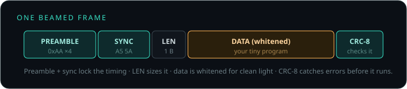

How BeamClaw works
English ─▶ LLM (or built-in templates) compile to assembly ─▶ deterministic assembler + safety validator ─▶ framed · whitened · CRC ─▶ LIGHT (screen white/black → LDR) ─▶ chip stores it to EEPROM ─▶ tiny bytecode VM runs it forever, offline
The LLM only proposes a program. A deterministic assembler turns it into bytecode and a validator proves it's safe — legal opcodes, in-range jumps, never driving the serial pins or the sensor pin, and no tight loop that would starve the chip — before a single bit leaves the screen.

What a beamed frame looks like

Hardware
An Arduino Uno (ATmega328, 2 KB RAM, ~$3) and a light sensor (an LDR/photoresistor module, ~50¢): S→A0, +→5V, −→GND. The onboard LED is D13. Flash the firmware once →
The 2 KB agent VM — instruction set
| Op | Form | Does |
|---|---|---|
| LDI | LDI r, imm | load a number into a register |
| AR | AR r, pin | read an analog pin (e.g. the light sensor) |
| CMPLT / CMPGT | CMP r, r2 | compare → set the flag |
| JMP / JT / JF | … label | jump, or jump if flag true/false |
| DWI | DWI pin, 0|1 | set a pin low/high |
| PWMI | PWMI pin, duty | analog-write (0–255) |
| TGL | TGL pin | toggle a pin |
| WAITI | WAITI ms | pause |
| ADD / SUB | r, r2 | arithmetic |
| HALT | HALT | stop |
Pins: D0–D13, A0–A5 (14–19). Output ops can't target D0/D1 (USB serial) or A0 (the sensor/receiver). Toggle Developer view in the console to see the assembly + bytecode for any agent.
Built-in behaviours (no key needed)
blink (any pin/rate) · blink-in-the-dark (reacts to the light sensor) · heartbeat · breathe / fade (PWM glow) · strobe · SOS (Morse) · turn on/off a pin · buzz a pin. The console understands many phrasings, suggests options when unsure, and after a beam it asks you to confirm the board caught it. Add your Anthropic key (⚙) to compile anything you can describe.
FAQ
Does the chip need internet?
No. The LLM runs in your browser/phone and compiles once. The chip runs offline forever.
Is an LLM running on 2 KB?
No — that's impossible. The LLM compiles a tiny program; the 2 KB chip just runs it. "LLM-compiled agency," not "LLM on chip."
Why light, not WiFi?
No radio means it works air-gapped and where WiFi is banned, with nothing to pair — and one screen can program many chips at once.
How fast is it?
~10–15 bits/sec over light — a small program beams in a few seconds. It's "compile once, run forever," not streaming.
Other boards?
Built and proven on the Uno. The VM is tiny and portable; other AVRs are next.
Is it secure?
Today, anyone with light in view can beam a program. For sensitive use, add a shared-key signature (HMAC) — on the roadmap.
Limitations & roadmap
Today: slow (~10–15 bps), line-of-sight, one-way, fixed compiled behaviour (not runtime reasoning), no auth. Next: browser flashing polish · two-way uplink → "living firmware" (the LLM recompiles and re-beams) · optical contagion (a program that re-beams itself chip-to-chip) · a richer VM.